%%{ init: { 'flowchart': { 'curve': 'linear', "htmlLabels": true }}}%%
graph LR
A1(<b>Transformer</b>)
style A1 fill:#265A93, stroke:#f66
A2(<b>Transformer</b>)
style A2 fill:#265A93, stroke:#f66
B(<b>Model for<br>Tabular Data</b>)
style B fill:#265A93, stroke:#f66
C(<b>Fusion Head<br>Outcome</b>)
style C fill:#265A93, stroke:#f66
D(<b>Tabular Data</b>)
style D fill:#339966, stroke:#f66
E(<b>Product Description</b>)
style E fill:#339966, stroke:#f66
F(<b>Product Image</b>)
style F fill:#339966, stroke:#f66
G(<b>Features<br></b>X1,...,Xp)
style G fill:#339966, stroke:#f66
H("<b>Price</b><br>Log(P)")
style H fill:#339966,stroke:#f66
I("<b>Demand</b><br>Log(Q)")
style I fill:#339966, stroke:#f66
J(<b>Fusion Head<br>Treatment</b>)
style J fill:#265A93,stroke:#f66
K(<b>Tabular<br>Embedding</b>)
L(<b>Embedding<br>Network</b>)
style L fill:#265A93, stroke:#f66
M(<b>Text<br>Embedding</b>)
N(<b>Image<br>Embedding</b>)
O(<b>Unstructured<br>Data Embedding</b>)
REP(<b>Embedding</b><br>General Product Feature<br>Representation)
P("<b>Prediction</b><br>E[Log(P)|X]")
Q("<b>Prediction</b><br>E[Log(Q)|X]")
R(<b>Combined Loss)
style R fill:#FAA0A0, stroke:#f66
D --> I & H & G
E --> A1
F --> A2
A1 --> M
A2 --> N
M & N --> L
L --> O
C --> Q
J --> P
O & K --> REP
Q & P --> R
G --> B
B --> K
REP --> C & J
H & I --> R
subgraph tab_data[" "]
D
G
H
I
end
style tab_data fill:#E8D6D2, stroke:#0000
subgraph emb_net[" "]
A1
A2
E
F
M
N
L
O
end
style emb_net fill:#E8D6D2, stroke:#0000
subgraph tab_net[" "]
B
K
end
style tab_net fill:#E8D6D2, stroke:#0000
subgraph fusion[" "]
J
C
P
Q
R
end
style fusion fill:#E8D6D2, stroke:#0000
classDef whiteText color:white;
class A1,A2,B,C,D,E,F,G,H,I,J,L,R whiteText;


Price Elasticity Estimation using Image and Text Data
November 24, 2023
Philipp Bach
University of Hamburg
Economic AI
Victor Chernozhukov
Massachusetts Institute
of Technology
Sven Klaassen
University of Hamburg
Economic AI
Martin Spindler
University of Hamburg
Economic AI
Jan Teichert-Kluge
University of Hamburg
Motivation
Motivating Example - Data Sources
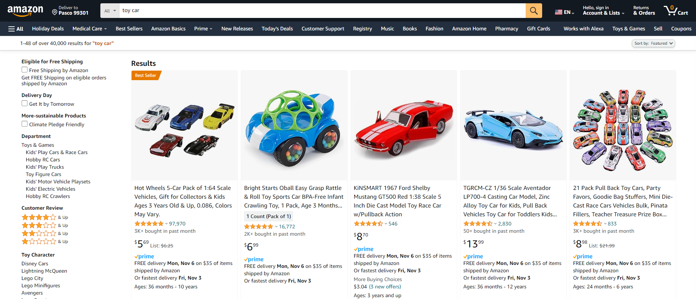
Image Data
Text Data
Tabular Data
Motivating Example - About Price Elasticity
- Understanding price elasticity is crucial for economic analysis and business decisions
- It influences strategies, pricing, and market dynamics
- Traditional causal methods rely on structured data, limiting their applicability
- Utilizing unstructured data enhances decision-making
- Sources like images and text contain valuable insights
- Contain rich hidden information about unobserved confounding variables
Motivating Example - PLR
Partially linear regression model (PLR)
\[ \begin{align*} &\ln(Q) = \ln(P) \theta_0 + g_0(X) + \varepsilon, & &\mathbb{E}[\varepsilon| P,X] = 0, \\ &\ln(P) = m_0(X) + V, & &\mathbb{E}[V | X] = 0, \end{align*} \]
with
- Demand \(Q\)
- Price \(P\)
- Additional product features \(X = (X_1, \dots)\)
- Stochastic errors \(\varepsilon\) and \(V\)
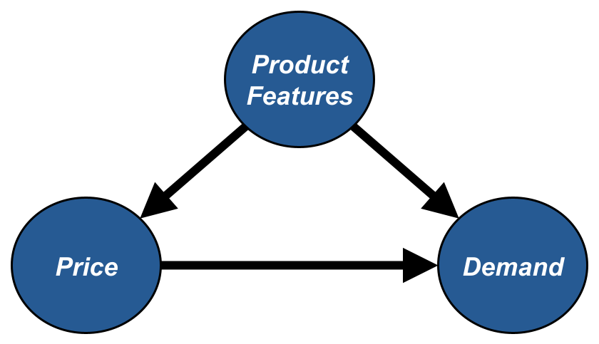
\(\Rightarrow\) The causal parameter \(\theta_0\) can be interpreted as price elasticity of demand!
Motivating Example - DML
Double/Debiased Machine Learning (DML)
- Use machine learning methods to fit \[ \begin{align*} l_0(X)&:=\mathbb{E}[\ln(Q)|X]\\ m_0(X)&:=\mathbb{E}[\ln(P)|X] \end{align*} \]
- Construct the orthogonalized score (either cross-fitting or split the sample) for a fitted nuisance learner \(\hat{\eta}_0:=(\hat{l}_0, \hat{m}_0)\) \[ \psi(W,\theta,\hat{\eta}_0) := \Big(\ln(Q) - \hat{l}_0(X) - \theta\big(\ln(P)-\hat{m}_0(X)\big)\Big)\Big(\ln(P)-\hat{m}_0(X)\Big) \]
- Compute the estimate as the solution of \[ 0 = \frac{1}{n}\sum_{i=1}^n \psi(W,\hat{\theta}_0,\hat{\eta}_0) \]
Motivating Example - DML
Assumptions for the nuisance elements (see Chernozhukov et al. (2018)) \(\lVert \hat{m}_0 - m_0 \rVert_{P,2} \times \big( \lVert \hat{m}_0 - m_0 \rVert_{P,2} + \lVert \hat{\ell}_0 - \ell_0\rVert _{P,2}\big) \le \delta_N N^{-1/2}\)
Under some regularity conditions the estimator \(\hat{\theta}_0\) concentrates in \(1/\sqrt{n}\)-neighborhood of \(\theta_0\) and \[ \sqrt{n}(\hat{\theta}_0 - \theta_0) \to \mathcal{N}(0,\sigma^2) \]
\(\Rightarrow\) simple approach to control for product features, if they can be used for ML models!
Motivating Example
Let’s consider the example in more detail!
A presumably very important feature to consider might be product quality. How to determine product quality? Maybe use average rating, number of reviews, etc.
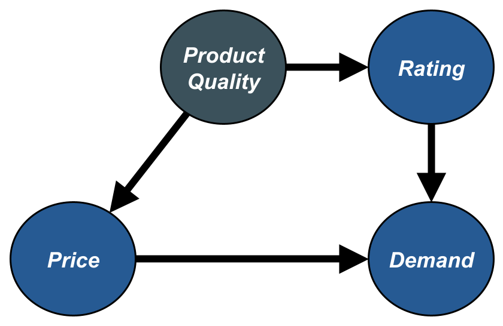
\(\Rightarrow\) Additionally rely on product description and images to describe the product feature!
DoubleML Deep
DoubleML Deep - Motivation
- Use product description and image additionally to conventional tabular features
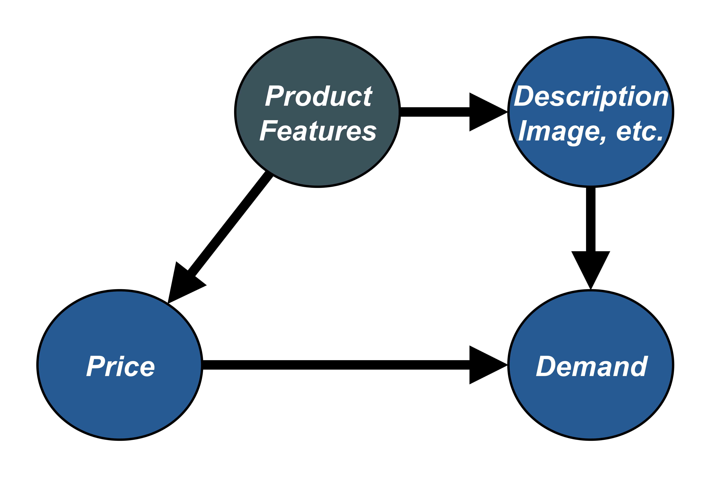
DoubleML Deep - Module Structure
DoubleML Deep - Workflow
%%{ init: { 'flowchart': { 'curve': 'linear', "htmlLabels": true },'securityLevel': 'loose'} }%%
graph LR
n4(<b>Data</b><br>e.g. csv-path, image files, ...) --> n0(<b>DoubleML Deep<br>Data module</b><br>dataloaders, preprocessing, ....<br><img class='Icon' src='../shared_files/logo_dark.png' height='60' /><img class='Icon' src='../shared_files/pl_logo_light.svg' height='20' />)
style n4 fill:#339966,stroke:#f66
style n0 fill:#265A93,stroke:#f66
n0 --> n3(<b>Trainer</b><br>distributed training<br>`fit` and `predict` methods<br><img class='Icon' src='../shared_files/pl_logo_light.svg' height='20' />)
style n3 fill:#265A93,stroke:#f66
n2("<b>DoubleML Deep<br>Lightning Module</b><br>training and validation steps<br><img class='Icon' src='../shared_files/logo_dark.png' height='60' /><img class='Icon' src='../shared_files/pl_logo_light.svg' height='20' />") --> n3
style n2 fill:#265A93,stroke:#f66
n1(<b>DoubleMLDeep Module</b><br>network structure & loss<br><img class='Icon' src='../shared_files/logo_dark.png' height='60' /><img class='Icon' src='../shared_files/pytorch-logo-flame.png' height='50' /><img class='Icon' src='../shared_files/hf_icon.svg' height='50' />) --> n2
style n1 fill:#265A93,stroke:#f66, color:#9999
n5(<b>Model Inputs</b><br>image, text models, ....) --> n1
style n5 fill:#339966,stroke:#f66
n6(<b>Hyperparameter</b><br>learning rate, optimizer,...) --> n2
style n6 fill:#339966,stroke:#f66
n7(<b>Callbacks, Logger, ...</b>) --> n3
style n7 fill:#339966,stroke:#f66
n3 --> n8(<b>Predictions</b>)
style n8 fill:#339966,stroke:#f66
n8 --> n9(<b>DoubleML Module</b><br><img class='Icon' src='../shared_files/logo_dark.png' height='60' />)
style n9 fill:#265A93,stroke:#f66
subgraph Inputs[" "]
n4
n5
n6
n7
end
style Inputs fill:#E8D6D2, stroke:#0000
classDef Icon margin:0px, stroke-width:0px, padding:0px, fill:#000, position:center, bottom:0px, right:0px;
classDef whiteText color:white;
classDef blackText color:black;
class n0,n1,n2,n3,n4,n5,n6,n7,n8,n9 whiteText;
DoubleML Deep - More Details
Use pretrained models for unstructured data e.g. Bert and Beit
Basic models for tabular data seem sufficient
Monitor the nuisance losses
- \(\lVert \hat{l}_0 - \ln(Q) \rVert_{P,2} \le \lVert \hat{l}_0 -l_0 \rVert_{P,2} + \sigma_{\tilde{\epsilon}}\)
- \(\lVert \hat{m}_0 - \ln(P) \rVert_{P,2} \le \lVert \hat{m}_0 - m_0 \rVert_{P,2} + \sigma_V\)
Application
Amazon Toys Dataset
- Public Data from the Amazon sales platform from category toys and games for subcategories vehicles, cars and trucks.
- Using the Sales Rank as a proxy for quantities, as shown in Bajari et al. (2023).
| Variable | Description |
|---|---|
| Sales Rank | Sales rank as weighted mean for the last 30 days |
| Price | Price as weighted mean for the last 30 days |
| Text | Combination of Title, Category, Description, etc. |
| Image | First Image of the product |
Amazon Toys Dataset
Continous Variables
- Reviews: Rating
- Reviews: Review Count
- New Offer Count: Current
- Count of retrieved live offers: New, FBA
- Count of retrieved live offers: New, FBM
Categorical Variables
- Lightning Deals: Upcoming Deal
- Buy Box: Is FBA
Scatterplots with OLS Regression of Tabular Variables and \(\ln(Q)\)
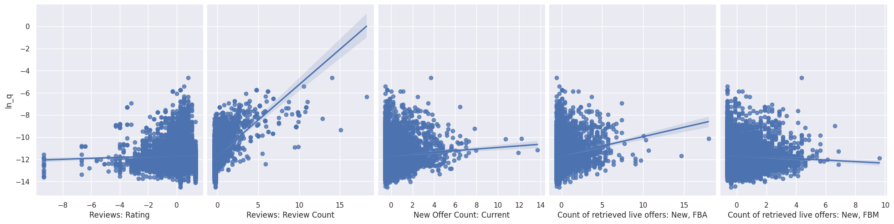
Amazon Toys Dataset
Data Examples
Kinsmart Set of 4 McLaren 720s Toy | …
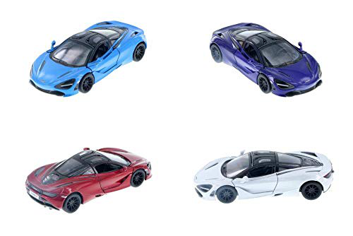
Pixar Cars Mack Uncle Lightning…
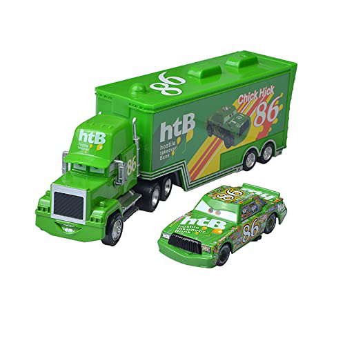
Baseline
- Baseline estimate with tabular covariates, OLS model for regression
- \(\ln(Q) = \theta_0 \ln(P) + \beta^T X + \epsilon\)
- \(R^2 = 0.330\)
- \(\ln(Q) = \theta_0 \ln(P) + \beta^T X + \epsilon\)
| 2.5 % | \(\theta\) | 97.5 % |
|---|---|---|
| -0.072 | -0.046 | -0.019 |
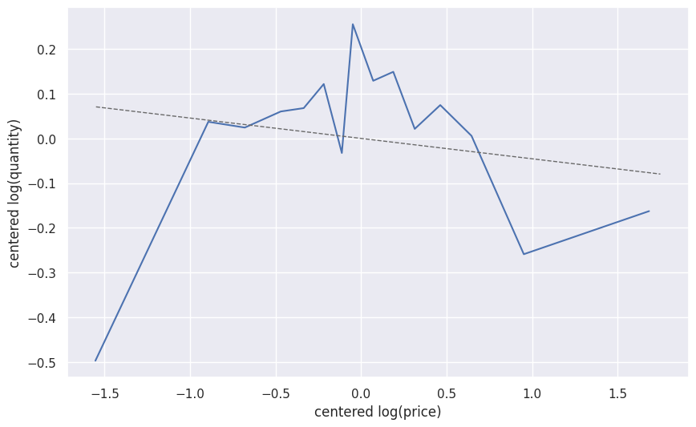
Baseline
- Estimate with tabular data as covariates \(X\) in \(\texttt{DoubleMLPLR}\) model with \(\texttt{RandomForest}\) regressors
- \(l_0(X) := \mathbb{E}[\ln(Q)|X]\)
- \(R^2_{l_0} = 0.5986\)
- \(m_0(X) := \mathbb{E}[\ln(P)|X]\)
- \(R^2_{m_0} = 0.1884\)
- \(l_0(X) := \mathbb{E}[\ln(Q)|X]\)
| 2.5 % | \(\theta\) | 97.5 % |
|---|---|---|
| -0.132 | -0.1098 | -0.080 |
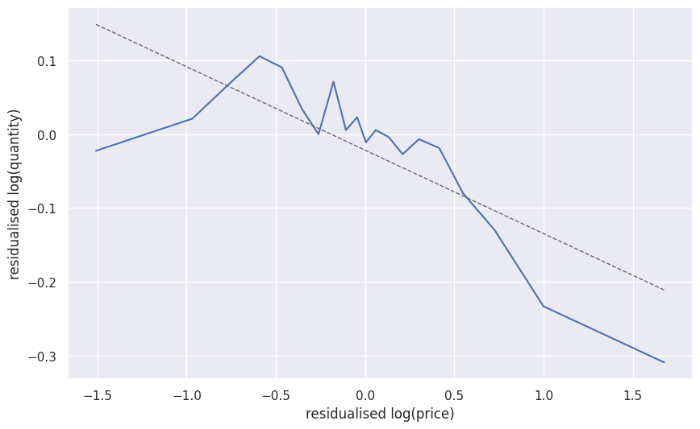
Deep Learning Models
- In this study, a variety of input data combinations were used to train \(\texttt{DoubleMLPLRDeep}\) models 1:
| Key | Used Confounders |
|---|---|
| \(\texttt{img}\) | \(X = (X_{img})\) |
| \(\texttt{imgtab}\) | \(X = (X_{img}, X_{tab})\) |
| \(\texttt{txtimg}\) | \(X = (X_{txt}, X_{img})\) |
| \(\texttt{txt}\) | \(X = (X_{txt})\) |
| \(\texttt{txttab}\) | \(X = (X_{txt}, X_{tab})\) |
| \(\texttt{txtimgtab}\) | \(X = (X_{txt}, X_{img}, X_{tab})\) |
\(\Rightarrow\) The aim is to emphasize the benefits of utilizing unstructured data.
Deep Learning Models: \(R^2\)-Scores
- \(R^2\) of log(Quantity) on Validation Set

- \(R^2\) of log(Price) on Validation Set

First Results
- Using different combinations of tabular, image and text data we obtain the following estimates
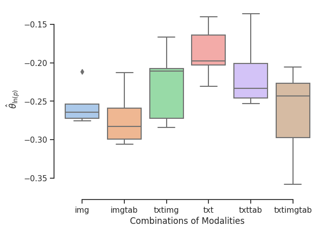

Comparison to Baseline Estimates
| Model | Covariates | \(R^2_{l_0}\) | \(R^2_{m_0}\) | \(\hat{\theta}_0\) |
|---|---|---|---|---|
| \(\texttt{OLS}\) | \(X=X_{tab}\) | \(0.3300\) | - | \(-0.0455\) |
| \(\texttt{DoubleMLPLR}\) | \(X=X_{tab}\) | \(0.5986\) | \(0.1884\) | \(-0.1098\) |
| \(\texttt{DoubleMLPLRDeep}\)1 | \(X=(X_{tab}, X_{txt}, X_{img})\) | \(0.5990\) | \(0.6765\) | \(-0.2794\) |
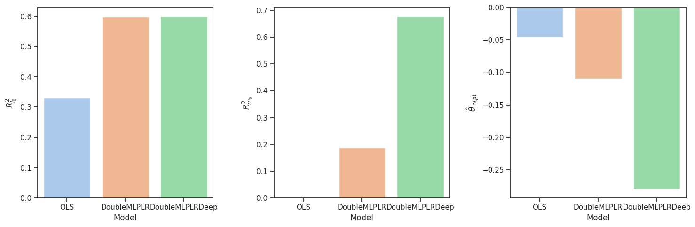
References
References
Bach, Philipp, Victor Chernozhukov, Malte S Kurz, and Martin Spindler. 2022. “DoubleML-an Object-Oriented Implementation of Double Machine Learning in Python.” Journal of Machine Learning Research 23: 53–51.
Bajari, Patrick, Zhihao Cen, Victor Chernozhukov, Manoj Manukonda, Suhas Vijaykumar, Jin Wang, Ramon Huerta, et al. 2023. “Hedonic Prices and Quality Adjusted Price Indices Powered by AI.” https://arxiv.org/abs/2305.00044.
Chernozhukov, Victor, Denis Chetverikov, Mert Demirer, Esther Duflo, Christian Hansen, Whitney Newey, and James Robins. 2018. “Double/Debiased Machine Learning for Treatment and Structural Parameters.” The Econometrics Journal 21 (1): C1–68. https://onlinelibrary.wiley.com/doi/abs/10.1111/ectj.12097.
Affiliations
University of Hamburg
https://www.bwl.uni-hamburg.de/en/statistik/allgemein.html
Massachusetts Institute of Technology
https://stat.mit.edu/about/
Economic AI
https://economicai.com/
DoubleML
https://docs.doubleml.org/stable/index.html
\(\Rightarrow\) Thanks for your Attention!
DoubleML Deep